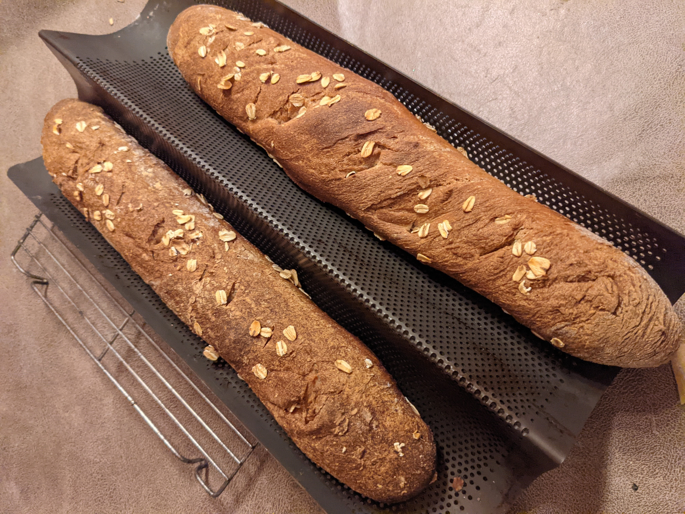
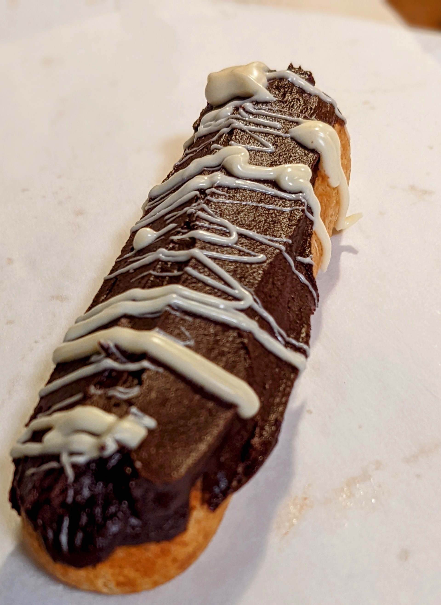
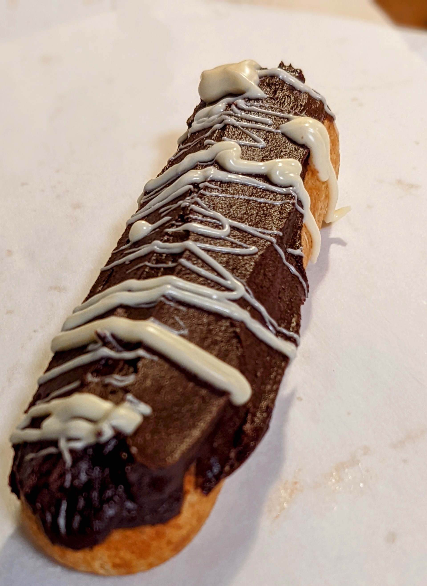

Baking Catalogue
Pictures, techiques and tips
Photos and names
Crossiants are a french pastry made wiht bread lamentited with butter

Bagguetes are a long thin piece of bread
macarons are light chewy meruinge cookies made filled with a cream or ganache

Technique
a good techinue for making round pieces of dough for buns is to:
- lay the dough flat
- pinch the two long ends flat
- pinch the other sides together
- seam side down roll the dough with light force brushing your thumb into the bottom to furhter picnh any creases
Tips
when decorating pastrys its imporant to be as creative as possible, good sources of inspiration cna be found in nature or in abstract art
 
